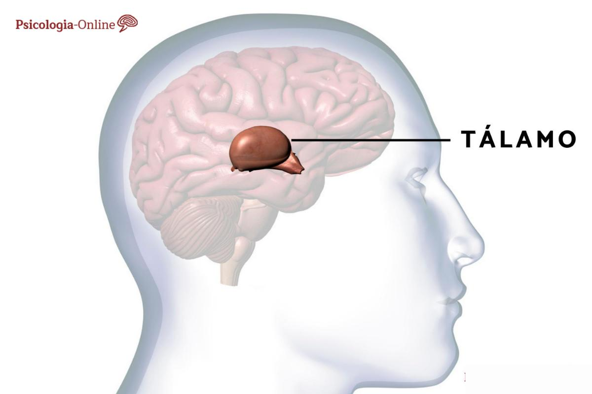

Estudantes estudam por muitas horas seguidas atrás da tão sonhada aprovação no enem para ao curso de medicina! Porém, esse cenário pode trazer uma série de problemas físicos e mentais por conta da falta de equilíbrio na vida. É importante que os alunos saibam se dedicar a cada área da sua vida balanceadamente para que bons resultados sejam obtidos. A ciência comprova que, passar a noite estudando ou dormir mal, interfere no ciclo do sono, o que impacta diretamente na absorção de conhecimento e na consolidação da memória.
| Mínimo de sono: | 8 horas |
| Estagio REM do sono: | 10 a 60 minutos |